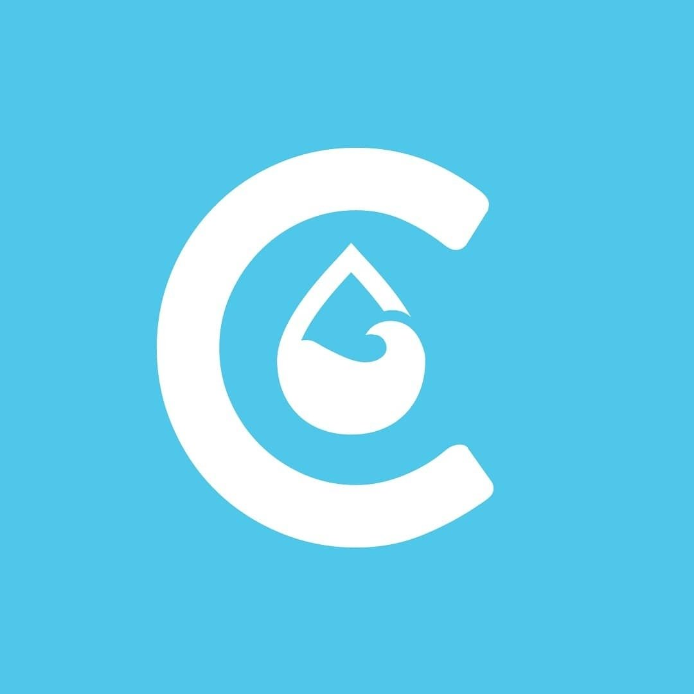
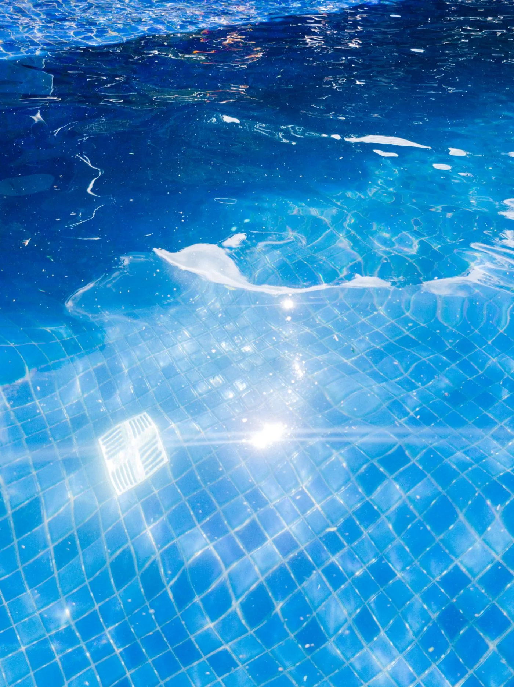
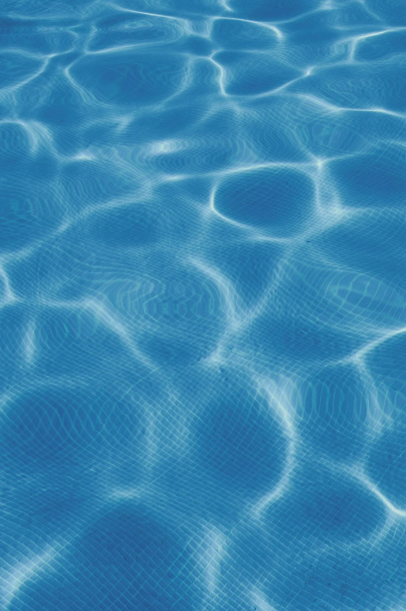
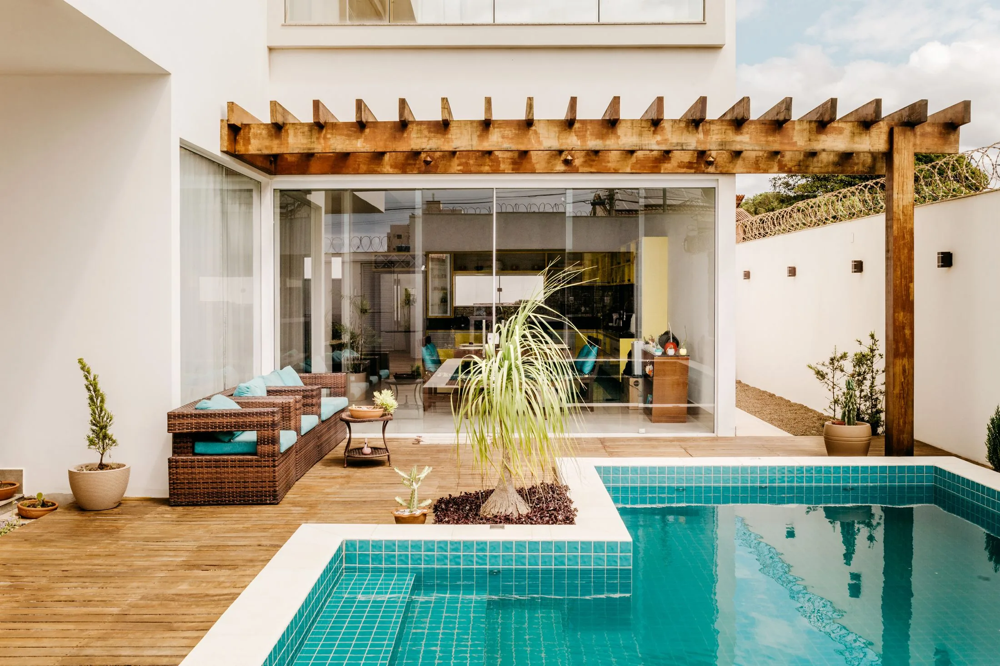

Tranquilidade
Piscina cuidada por quem entende.

Crystal ClearClaro como Cristal. Solicitar orçamento ↗Tratamento & manutenção de piscinas
Tratamento e manutenção profissional para manter sua piscina limpa, equilibrada e pronta para aproveitar.
Mogi das Cruzes Alto Tietê
01 / Tranquilidade
Da qualidade da água ao funcionamento dos equipamentos, cuidamos dos detalhes para que sua única preocupação seja aproveitar.

02 / O que sustenta o resultado
Manter a piscina cristalina vai muito além de retirar folhas. Equilíbrio da água, filtragem e cuidado com equipamentos trabalham juntos para deixá-la pronta para uso.
03 / Cuidado recorrente
Tratamento sob contrato
Cuidado contínuo e profissional para manter sua piscina em dia durante todo o ano.
Há opções com fornecimento de produtos ou somente mão de obra especializada.
04 / Atendimento pontual
Tratamento sob demanda
Limpeza e tratamento profissional quando sua piscina precisa de atenção específica.
Cada piscina precisa ser avaliada para definir o serviço adequado.
Solicitar atendimento ↗05 / Escopo do cuidado

Tratamento completo
Correção dos parâmetros, decantação, higienização, escovação do fundo e das laterais.
06 / Em cada visita
Uma rotina clara torna o cuidado previsível — e sua piscina, muito mais simples de aproveitar.
Verificação das condições gerais da piscina.
Ajustes necessários para manter a água corretamente tratada.
Cuidado com superfícies, bordas e fundo.
Verificação e cuidado com o sistema.
Registro do serviço realizado.

Piscina bem cuidada muda completamente a experiência do espaço.
07 / O que muda na rotina
Piscina cuidada por quem entende.
Menos tarefas na rotina.
Acompanhamento ajuda a identificar necessidades antes que cresçam.
Mais tempo aproveitando.
08 / Confiança visível
O relatório dos serviços prestados ajuda a registrar o que foi realizado em cada atendimento.
Representação visual. O formato do relatório pode variar.
09 / Crystal Clear
A Crystal Clear é especializada em tratamento e manutenção de piscinas em Mogi das Cruzes e região do Alto Tietê. Nosso trabalho combina cuidado técnico, rotina e atenção aos detalhes para manter cada piscina limpa, equilibrada e pronta para uso.
Acompanhar no Instagram ↗Uma pergunta simples:
Talvez seja hora de simplesmente aproveitá-la.
Falar com a Crystal Clear ↗10 / Perguntas frequentes
Sim. A Crystal Clear oferece tratamento sob contrato, com opções mensais, semestrais e anuais. Entre em contato para avaliarmos a rotina adequada para sua piscina.
Sim. Há atendimento sob demanda para necessidades pontuais, além dos planos recorrentes.
Existem opções com fornecimento de produtos e opções somente com mão de obra especializada. A condição é definida no orçamento.
Os serviços incluem manutenção hidráulica e elétrica, além de cuidados com filtragem e casa de máquinas. O atendimento depende de avaliação.
Sim. A troca da areia do filtro faz parte dos serviços oferecidos.
Envie uma mensagem pelo WhatsApp com as informações iniciais da sua piscina. A Crystal Clear orientará os próximos passos.
11 / Próximo passo
RegiãoMogi das Cruzes
Alto Tietê — SP